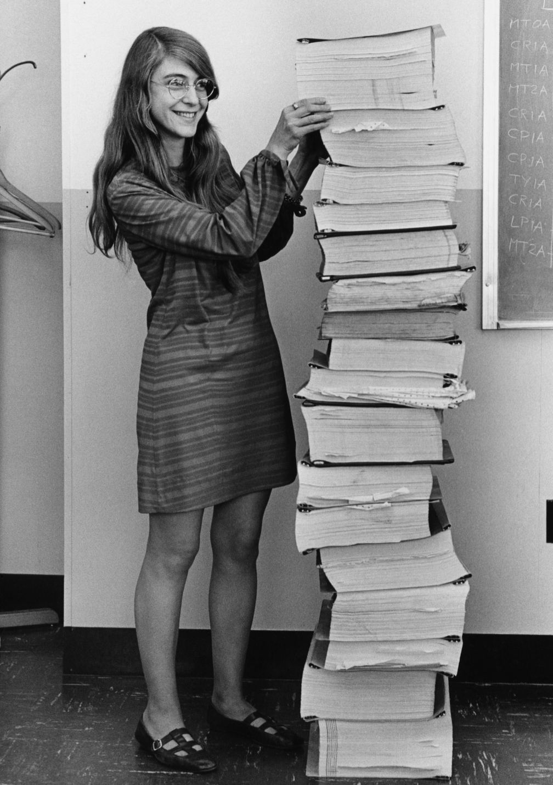
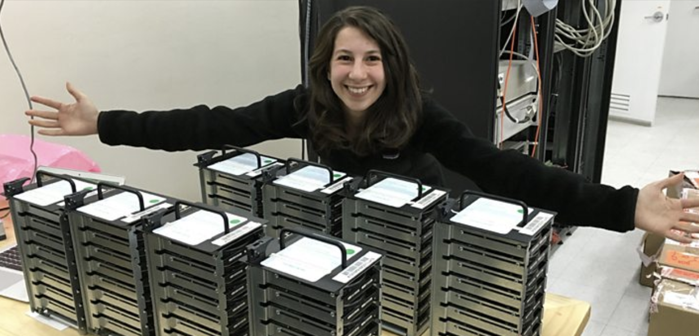
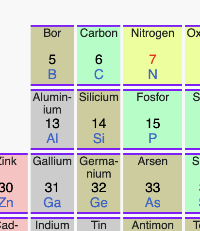
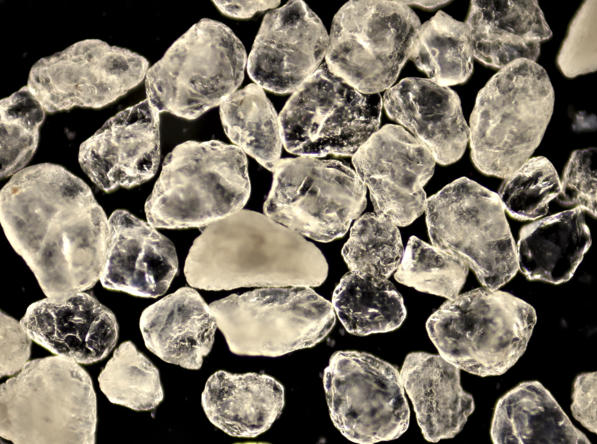
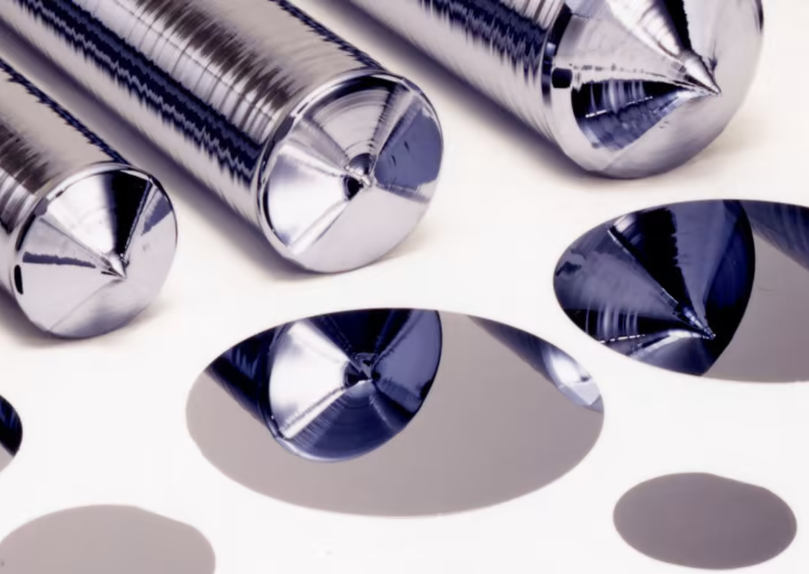
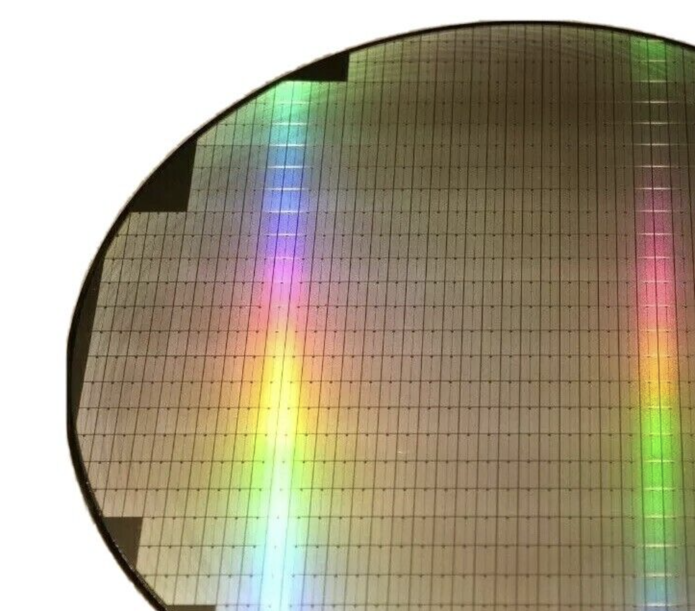
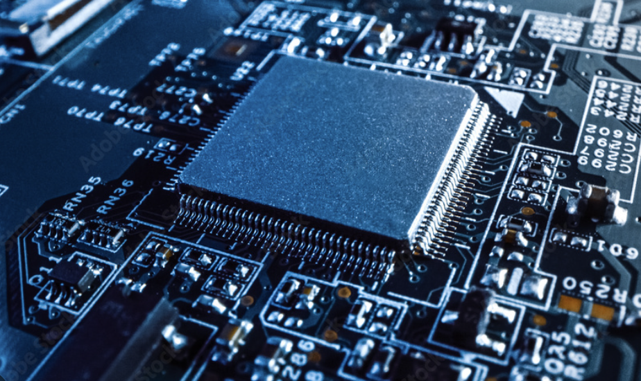

En computer er en maskine der kan mange forskellige ting. Den started som en maskine der kan gøre matematik lettere. og nu er den
Måske ville de tage lang tid og være lidt kedeligt at regne hele formlen ud der starter med:
(1 - 1 / 3 + 1 / 5 - 1 / 7 + 1 / 9 - 1 / 11 + 1 / 13 ) x 4
så en computer kan hjælpe med at finde resultatet meget hurtigere:
3,2837 (og eventuelt 3.14)
Computere kan meget andet nu, som f.eks. hælpe med at skrive, spille spil, se videoer og tale med folk. Moderne computere har altid været brugt til spil. Her er et af de første:

Spacewar - MIT, Amerika, 1962
Computere kan være store eller små og kan bestå af:
-
Et
tastaturog en mus for at give instruktioner. F.eks. vores lange formel ovenfor. -
En
skærmfor at vise resultatet. -
Processor: en meget hurtig og lille lommeregner der er "hjernen" der kan udregne et resultat. Den hedder også en mikrochip eller CPU.
Computere startede som kæmpe store lommeregnere - lad os gå tilbage i tiden og møde dem der skabte computerne og brugte dem til banebrydende opfindelser.
Computerens historie
180 år siden: Ada Lovelace, Charles Babbage og den første regnemaskine

Differens Maskinen
Ada havde rigtigt mange ideer til skøre maskiner, f.eks. nogle der kunne flyve. Hendes mor ville også gerne have hun lavede sine lektier, specielt matemetik. Hun endte med at elske matematik og læste en masse om det. Derfor hørte hun om Charles Babbage, der havde opfundet en maskine så man kunne regne meget hurtigere end i hovedet og på parpir. Den hed differens maskinen og skulle laves af mange tons af metal og tusindvis af tandhul. Ada var fascineret brugte mange timer på at studere differens maskinen. I 1843 opfandt Ada ideen om at ændre funktionen af den med en serie af specielle instruktionerpå hul kort. Rækkefølgen og hul eller mellemrum var instruktionerne.
Ada Lovelace var den første computer programmør.
Det første computer program, skrevet af Ada |
Hul-kort fra 80'erne |
80 år siden - Alan Turing, Wrens og hemmelige koder
Alan Turing var en opfinder og matematiker, der levede for mange år siden. Under 2. verdenskrig arbejdede han for den britiske regering med at læse hemmelige beskeder fra Nazisterne der var fjenden.

Han gjorde dette ved at designe en stor maskine kaldet Bombe, der kunne udføre beregninger meget hurtigere end en person. Bombe var så stor, at den fyldte hele et rum, var lavet af bronzefarvet metal og havde en masse elektonik og hjul der kunen rotere.

Alan havde hjælp af mange mennesker til sit arbede omkring Bombe, deriblandt nogle specielle damer kaldet Wrens der programmerede Bombe for at løse koderne. De arbejdede sammen for at hjælpe regeringen med at finde ud af, hvad fjenden havde planlagt. Ved at bruge teknologi og deres intelligens redede de mange tusind liv under 2. verdenskrig. Dette var med til at vinde krigen.
50 år siden: Magaret Hamilton og Månen
Den Amerikanske Apollo-mission sendte de første mennesker til Månen. De havde en computer på størrelse med et skab.

Margaret Hamilton var en datalog og chef for det hold der udviklede softwaren, som styrede rumfartøjet og sørgede for, at det fungerede korrekt. En dag tog hun sin datter med på arbejde og de legede astronaut. Datteren ogtrykkede på alle knapperne og hjalp med at finde en vigtig fejl i programmet some Margaret så kunne reperere. Det er stadigt meget vigtigt idag at teste programmer for fejl.
På grund af hendes arbejde var missionen en success og rumfartøjet Eagle kunne både lande sikkert på månen med de 3 astronauter og få dem hjem til jorden igen. Margaret Hamilton er en af de vigtigste personer i datalogiens verden og mange af hendes opfindelser bliver stadig brugt idag og findes i computer programmer der skal være sikre som f.eks. i en flyvemaskine.
Her er hun med alle programmerne til Apollo missionen. Hvor mange sider tror i der er?(14.500 sider):

2 år siden: Katie Bouman og det sorte hul.
Katie Bouman er en datalog der arbejder med at lave billeder på computere. Hun gjorde det muligt for forskere at se et billede af et sort hul for første gang. Et sort hul er et sted i rummet, hvor tyngdekraften er så stærk, at ingenting, ikke engang lys, kan undslippe det.
Her er et billede hvor hun ser resultatet af sit arbejde for første gang. Hvordan ser hun ud?

Katie og hendes venner arbejde sammen med astronomer over hele verden og samlede målinger fra rummet sit computer program. Hun fik en asteroide opkaldt efter sig, 291387 Katiebouman.

Dette program kunne beregne verdens første billede af et sort hul ved at samle et slags puslespil af alle astronomernes data.

Dette var en meget vigtig opdagelse, fordi det hjalp forskerne med at forstå mere om sorte huller og universet.
Så der er mange mennesker der har hjulpet med til at opfine selve computeren - og andre der har opfundet programmerne der førte til nye opfindelser der har ændret vores syn på hele universet.
Hvad er en computer lavet af?
Lad os finde ud af hvad en computer er lavet af. Det vigtigste er nok processoren, eller 'hjernen' så lad os kigge på den. En processor heder også en CPU eller mikrochip.
Der er processorer i mange ting fordi de er blevet små, bedre og bruger mindre electicitet. De er i alt fra biler til vaskemaskiner og ure og hjælper med at løse mange problemer som f.eks. avancerede matematiske udregninger. De samme computere kan bruges til sjove ting som f.eks. Minecraft.
Processoren er en lille sort firkant. Det sorte er bare et låg der beskytter det der er indeni.

Hvis vi åbner det sorte låg af og ser inden i processoren ser det lidt mere spændende ud.

Processoren er mest lavet af silikum skiver og kobber linier.
Hvad er silicum?
Silicum findes i sand:

Det er et mineral, et grundstof.
Hvis vi kigger på det i et mikroskop kan vi se de ligner krystaller. Det er fordi der er silikum i.
|  |  |
Varme krystaller
Specielt sand bruges til processorer og vi starter med at smelte det. Pas på - det er varmt!
(ca 2000 grader celcius!).
Kombinationen af varmen og processen laver sandet til en krystal, det hedder en
Czochralski process.
Vi kan lave vores egen krystal ved at gro den med krea-kits. Er der nogen der har prøvet det?
Krystallen til en chip ligner lidt en pølse. Den skærer vi i skiver
 |
|
|  |
Meget små kontakter
Derefter bruger de specielle værktøjer til at skære skiven i meget små stykker, kaldet transistorer. Transistorer er som små kontakter, der kan tænde og slukke for strøm. Der er mange af dem i en processor - ca. 17 milliarder! Og de er virkelig små - ca. 7 nano meter. Det er en million-del af en milimenter. Et hår er 70.000 nano meter bredt - så der kan ligge 10.000 af deher små kontakter på tværs af et hår.
|  |
Elektriske veje
Nu skal vi bruger metallet kobber. Kobber er god til at lede electricitet. Derfor er det også indeni ledninger.
 |
Vi bruger endnu mindre værktøjer til at tegne kobber-linjer på silicum'et. Disse linjer er en slags "veje" for strøm at rejse på.

Designet af disse 'veje' er vigtigt for at processoren kan blive lille, bruge minimalt strøm og vise dit favourit spil hurtigt.
Til sidst lægger vi et beskyttende lag på mikrochippen der gør den ligner en sort firkant. Så er mikrochippet klar til at blive brugt i enheder som telefoner og computere.

Til slut
Det firma jeg arbejder for designer processorer. Vores opfindelse er et design til processorer der er så små at vi kan have en computer i lommen - en smartphone.
En computer er rigtigt mange forskellige opfindelser lavet at mange dygtige personer. Områder som kemi, elektronik og mekanik har været vigtige for a bygge computeren . Programmerne der styrer computeren er ligeså vigtige og bygger på områder som logik, sprog og matematik.
Alle kan lære at skrive et computer program ved at bruge f.eks. Scratch, Minecraft Education eller læse bøger - det vigtigste er at vi vil lære noget nyt og har kreative ideer til opfindelser.
Mange opfindelser er gort ved hjælp af computere lad os tænke på hvorden vi hjælper hinanden og vores planet med de ting vi opfinder.